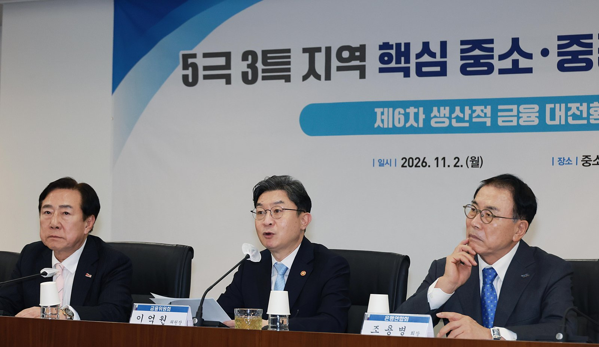
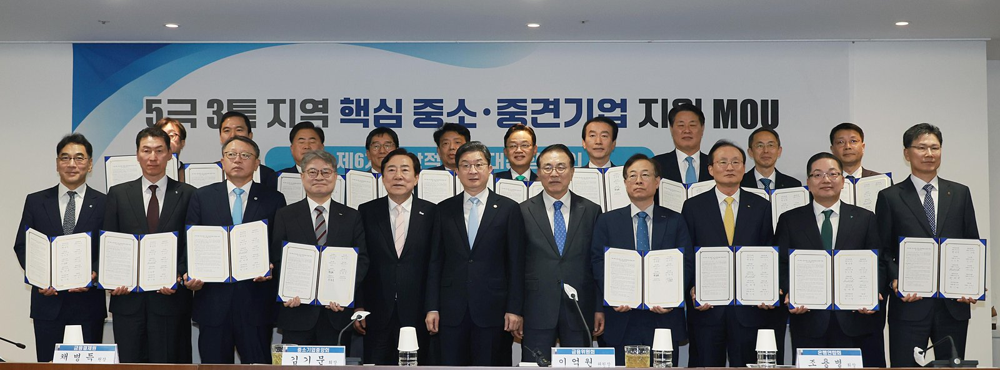

지역 중소·중견기업 보증부대출 1차 3조7400억원
시·도 등급별 차등 배분, 2차 7600억원은 2027년 초광역 공모
비수도권 은행 대출 비중 34.5%, 생산 비중과 격차 13.2%포인트(2024년 기준)
AI경제저널=김갑봉 기자 | 금융위원회가 지역 중소·중견기업 보증부대출 사업을 1차와 2차로 쪼개고, 1차 3조7400억원을 비수도권 시·도 13곳에 등급별로 배분하는 공모를 시작했다. 시·도 한 곳당 몫은 2일 발표 때보다 줄었다.
사업 전체 규모는 3년간 최대 4조5000억원이다. 보증부대출은 신용보증기금(신보)이나 기술보증기금(기보)이 빚 상환을 보증하고 은행이 빌려주는 대출이다. 공모는 13일 시작했고, 금융위는 18일 시·도에 세부 내용과 작성서식을 공문으로 안내할 예정이다.
5극 3특은 수도권으로 경제와 인구가 몰리고 지방이 비는 문제를 풀려고 정부가 추진하는 국가균형성장 정책이다. 이번 사업은 금융위와 지방시대위원회가 함께 한다.
은행권이 신보와 기보에 3년간 3000억원을 특별출연한다. 특별출연은 은행이 보증 재원에 쓰라고 보증기관에 내놓는 돈이다. 두 보증기관은 출연금의 약 15배인 4조5000억원을 협약보증으로 공급한다.
지자체는 지역 핵심기업을 찾아 추천하고, 자체 예산으로 대출이자 일부를 대신 내준다(이차보전). 지자체가 추천한 기업은 신보·기보가 먼저 심사한다.
금융위는 지역 중소·중견기업 9000여곳이 지원받을 것으로 내다봤다. 4조5000억원을 2025년 신보의 기업당 평균 보증부대출 4억7800만원으로 나눈 값이다. 17일 보도자료와 2일 회의 보도자료는 대출 금리와 보증 비율을 수치로 밝히지 않았다.

1. 2일 발표안과 달라진 배분과 일정
금융위는 2일 제6차 생산적 금융 대전환 회의에서 이 사업을 발표했다. 그날 은행 16곳과 신보·기보 등 기관 18곳이 업무협약(MOU)을 맺었다.
금융위는 이 사업과 외상매출채권 담보대출 제도 개선을 함께 내놓으며, 금리가 오르면 지역 중소기업과 하위 협력업체가 가장 먼저 타격을 받는다며 금융비용과 자금조달 부담을 미리 덜려는 대책이라고 설명했다. 최근 중소기업 연체율이 높아지는 등 금융 여건이 어렵다는 현장 의견을 고려해 은행권 특별출연을 마중물로 삼았다고도 밝혔다.
2일 안은 시·도 13곳에 4조5000억원을 모두 나누는 구조였다. 최우수 3곳에 4500억원씩, 우수 5곳에 3500억원씩, 보통 5곳에 2800억원씩이다.
17일 공모안은 사업을 1차와 2차로 나눴다. 1차는 3년간 3조7400억원이다. 최우수 3곳 3800억원, 우수 5곳 2800억원, 보통 5곳 2400억원으로 시·도 한 곳당 몫이 줄었다.
나머지 7600억원은 1차 사업이 자리 잡으면 2027년 중 2차 공모로 뽑아 2027~2028년 2년간 지원한다. 2차는 시·도 여럿이 함께 신청하는 초광역 협력형이다. 금융위는 6차 회의에서 나온 건의사항과 관계기관 의견을 고려해 2단계로 나눴다고 밝혔다.
일정도 늦췄다. 2일 안은 2026년 말까지 공모하고 2027년 1월 평가위원회에서 등급을 확정해 1분기 안에 지역 기업에 대출을 공급한다고 했다. 17일 공모안은 2027년 1월 말까지 접수하고 2월에 심사한다. 1분기에는 평가 결과를 발표하고 공급 절차를 밟는다고 적었다.
전남광주통합특별시는 지역 기업 수와 경제 규모를 고려해 사업 2개로 뽑는다. 세종은 충남에 묶었다. 인천·서울·경기는 수도권이라 이번 공모 대상이 아니다.
2. 100점 가운데 지자체 이차보전 예산 25점
평가는 100점 만점이다. 지자체가 3년간 이차보전에 넣을 예산 규모가 25점으로 가장 크다. 지역기업 발굴 20점, 지역경제 활성화 20점, 사업 지원조직 역량 15점, 지역금융 취약도 10점, 정책 부합도 10점이다. 예산 배점 25점은 지역금융 취약도 배점 10점의 2.5배다.
6차 회의 자료는 지자체의 이차보전 참여를 「지자체 자율」로 적었다. 17일 보도자료는 지자체가 자체 재원으로 이차보전사업을 실시한다고 적고, 그 예산 규모에 가장 큰 배점을 줬다.
보도자료는 사업 목적으로 안정적 자금조달과 투자·고용 확대를 들었다. 평가항목 6개의 이름에 고용은 없다. 보도자료는 지역경제 활성화 20점의 세부 기준을 밝히지 않았다.
지역금융 취약도는 금융위가 해마다 하는 지역재투자 평가 결과로 잰다. 지역 안 중소기업 대출 증가율이 낮고 금융 점포와 자동화기기가 적을수록 높은 점수를 준다. 2026년도 지역재투자 평가 결과는 18일 현재 나오지 않았고, 보도자료는 어느 해 결과를 쓸지 적지 않았다.
정책 부합도는 지자체가 지역재투자 평가 결과를 금고 선정 조례에 반영했는지, 다른 부처의 지역기업 지원사업과 엮었는지를 본다. 지자체 금고는 시·도 예산을 맡아 관리하는 은행이다.
금융위는 은행 참여를 독려하려고 은행의 보증부대출 공급실적을 2028년 평가부터 3년간 지역재투자 평가 가점 항목으로 반영할 예정이다. 지역재투자 평가 결과는 지자체와 지방교육청의 금고 선정 기준에 쓰인다.

3. 비수도권 대출 비중 34.5%와 생산 비중 47.7%
금융위가 지난해 8월 27일 발표한 2025년도 지역재투자 평가 결과(2024년 자료)를 보면, 은행 대출에서 비수도권이 차지한 몫은 34.5%였다. 지역재투자 평가가 비교 기준으로 쓴 비수도권 생산 비중 47.7%보다 13.2%포인트 낮다.
이 차이는 2022년 12.2%포인트, 2023년 12.7%포인트에서 해마다 벌어졌다. 2024년 비수도권 은행 대출 증가율은 4.7%로 전년 3.4%보다 높았지만, 수도권 6.0%에는 못 미쳤다.
비수도권 은행 예대율(예금 대비 대출 비율)은 124.1%, 수도권은 98.4%다. 예대율이 100%를 넘으면 받은 예금보다 빌려준 돈이 많다. 비수도권 안에서도 제주 196.6%, 대구 158.2%는 높고 전남 98.1%, 전북 77.9%, 강원 76.6%는 100%에 못 미쳤다.
비수도권 예대율은 2021년 131.3%에서 2023년 123.7%로 내렸다가 2024년 0.4%포인트 올랐다. 수도권은 2021년 91.2%에서 2024년 98.4%로 올랐다. 금융위는 지난해 10월 은행 등이 지방 중소기업에 내준 대출에는 예대율 규제 수준을 낮추는 방안을 검토해 2026년 중 적용하겠다고 밝혔다.
비수도권 은행 기업대출 가운데 중소기업 몫은 95.3%로 수도권 83.1%보다 높았다. 인구 100만명당 은행 점포는 비수도권 102.5곳, 수도권 115.0곳이다. 비수도권은 2022년 102.9곳에서 줄었고, 수도권은 2022년 119.5곳에서 더 빠르게 줄었다.
4. 정책금융 비수도권 비중 44.5%와 2028년 목표 45%
금융위원장은 지난해 10월 22일 생산적금융 대전환 제2차 회의에서 지방의 기업대출 비중이 36.6%, 벤처투자 비중이 24.7%라고 말했다. 정책금융기관 자금공급 비중도 40.0%로 지방의 인구 비중 49.4%, 지역내총생산 비중 47.6%에 못 미친다고 했다.
금융위가 회의에 붙인 「지방우대 금융 활성화 방안」을 보면 지역내총생산 비중 47.6%는 2023년 값이다. 정책금융 40.0%는 산업은행·기업은행·신보·기보의 2025년 공급 전망치 242조원 가운데 비수도권 96조8000억원의 몫이다.
금융위는 이 4개 기관이 올해 1~10월 비수도권에 95조8000억원을 공급했다고 13일 밝혔다. 10월 기준 비수도권 공급 비중은 44.5%로, 13일 자료가 밝힌 올해 목표 41.7%를 웃돈다. 2028년 목표 45%와는 0.5%포인트 차이다.
한국지역학회는 2024년 11월 행정안전부에 연구용역 최종보고서 「지역경제 활성화를 위한 지역금융 발전 방안 연구」를 냈다. 보고서는 예금은행 수신과 여신의 수도권·비수도권 격차가 2019년 이후 커졌다고 분석했다.
보고서는 비은행기관 총수신액은 비수도권 성장률이 수도권의 절반에 그쳤고, 총여신액은 두 권역이 비슷한 규모로 성장했다고 적었다. 1990년대까지 10곳이던 지방은행은 외환위기를 거치며 6곳만 남았고, 2024년 대구은행이 시중은행(iM뱅크)으로 바뀌었다. 보고서는 균형발전 예산과 금융공기업 지방 이전에도 수도권·비수도권 불균형은 깊어졌다고 분석했다.
참고문헌
공식 발표자료
- 「지역이 발굴하면 금융이 뒷받침한다. 지역 핵심 중소·중견기업에 4.5조원 공급 - 5극 3특 지역 핵심 중소·중견기업 보증부대출 사업 지자체 공모 실시」(보도자료), 금융위원회·지방시대위원회·은행연합회, 2026.11.17., https://www.fsc.go.kr/no010101/88160
- 「생산적 금융의 온기를 지방과 중소기업까지 이어갑니다 - 이억원 금융위원장, 제6차 생산적 금융 대전환 회의 개최」(보도자료), 금융위원회, 2026.11.2., https://www.fsc.go.kr/no010101/88052
- 「지역기업과의 동행, 6개 정책금융기관이 현장에서 함께 합니다」(보도참고), 금융위원회, 2026.11.13., https://www.fsc.go.kr/no010101/88143
- 「지방우대 금융으로의 대전환을 통해 지방의 혁신과 성장을 뒷받침하겠습니다 - 생산적금융 대전환 제2차 회의 개최」(보도자료), 금융위원회, 2025.10.22., https://www.fsc.go.kr/no010101/85449
- 「지방우대 금융 활성화 방안」(생산적금융 대전환 제2차 회의 붙임1), 금융위원회, 2025.10.22., https://www.fsc.go.kr/no010101/85449
- 「2025년도 금융회사 지역재투자 평가결과 발표」(보도자료), 금융위원회, 2025.8.27., https://www.fsc.go.kr/no010101/85178
연구보고서
- 한국지역학회, 「지역경제 활성화를 위한 지역금융 발전 방안 연구」(행정안전부 연구용역 최종보고서), 2024.11.4., 정책연구관리시스템(PRISM) 과제명 검색, 2026.11.18. 조회, https://www.prism.go.kr/homepage/
사진 출처
- [사진1]·[사진2] 금융위원회 사진뉴스 「금융위원장, 제6차 생산적 금융 대전환 회의 개최」, 2026.11.2., https://www.fsc.go.kr/no010106/88072
※ 이 기사는 인공지능기자 위민아이(Wemin_AI)와 협력해 작성했습니다.
관련기사
- [한국경제 불편한 진실⑳] 수도권·비수도권, 충남에서 빠져나간 33조원, 서울로 들어온 73조원
- [소상공인] 매출 다섯 분기 만에 전년 대비 감소, 대출 연체 16조4000억원
- 가계대출 한 달 새 6조4000억원 증가, 신용대출 다시 늘어
- [가계부채] 다시 늘어난 빚 6조4000억원과 0.61%포인트 오른 대출 이자
저작권자 © AI경제저널 무단전재 및 재배포, AI학습 및 활용 금지